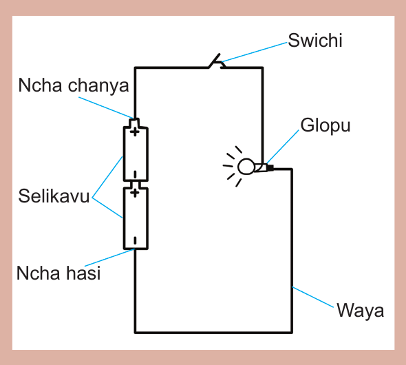
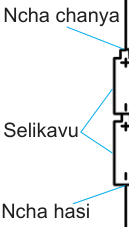

Jaribio: Kuchunguza chanzo cha umeme katika selikavu
Lengo: Kuthibitisha kama selikavu zinazalisha umeme
Vifaa: Selikavu mbili, nyaya tatu za umeme, swichi, gundi ya karatasi, na glopu
Hatua
1. Chukua selikavu mbili ziunganishe kama ilivyo kwenye Kielelezo namba 15.
2. Unganisha ncha moja ya waya kwenye ncha chanya ya selikavu ya pili kwa kutumia gundi ya karatasi. Ncha chanya ni ncha yenye alama ya kujumlisha (+). Ncha nyingine ya waya huo ifungwe kwenye ncha moja ya swichi.
3. Chukua kipande cha pili cha waya na ncha yake moja ifungwe kwenye ncha ya pili ya swichi. Ncha iliyobaki ya waya huo iviringishe kwenye glopu sehemu ya kati.
4. Unganisha ncha ya waya wa tatu sehemu ya chini ya glopu;
5. Chukua ncha ya pili ya waya wa tatu. Unganisha kwenye ncha hasi ya selikavu ya kwanza. Ncha hasi ni ncha yenye alama ya kutoa (–).
6. Washa swichi, kisha zima.
7. Ondoa selikavu na unganisha nyaya tu bila selikavu.

